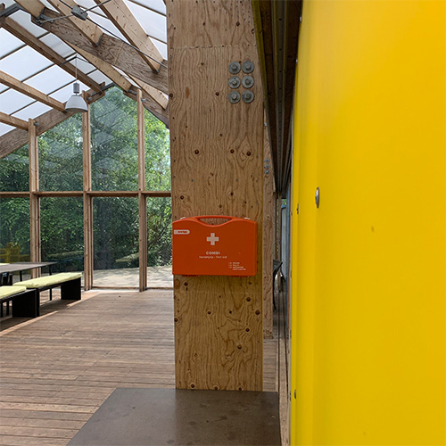
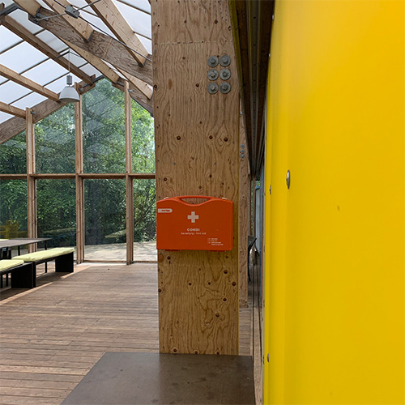

UDEFORSAMLINGSHUSET
Fjelstervangs udeforsamlingshus er åbent for alle! Vi har et fantastisk udeforsamlingshus - og sammen hjælper vi hinanden med at huset forbliver fantastisk. Udeforsamlingshuset er for alle i små eller store grupper, og vi håber, at alle aldre vil bruge det til mange forskellige aktiviteter, skabe liv i huset samt vi husker tage hensyn til hinanden.
Lidt historie
Fjelstervang Udeforsamlingshus blev indviet i 2013. Drømmen var at skabe et Udeforsamlingshus til byens mange foreninger og grupper af mennesker, der uanset alder gerne vil mødes tæt på naturen og have fornemmelsen af at være ude i det fri, også når man er i tørvejr for regn og blæst. Projektet blev meldt til konkurrencen ”Byg det Op”, som var udviklet i samarbejde mellem DR og Dansk Arkitektur Center.
Der var 800 projekter meldt til konkurrencen. Fjelstervang Udeforsamlingshus blev d. 24. maj 2013 et af de fire projekter der vandt 1, 6 million kr. og arkitekt hjælp. Arkitekterne var Joan Maria Raun Nielsen og Sofie Willems fra Spektrum Arkitekter i København. Ringkøbing- Skjern kommune var samarbejdspartner.
Frivillige hænder
Rigtig mange frivillige og lokale håndværkere, koordineret af en lige så hårdt arbejdende arbejdsgruppe gik Udeforsamlingshuset fra drøm og ide til virkelighed på kun 3 måneder – og alle involverede blev af arkitekterne kaldt superheltene fra Fjelstervang. Alle var inviteret til at hjælpe med at få Udeforsamlingshuset og området til at blive et skønt sted for alle. Eksempelvis er det nævneværdigt at børnene fra dagplejen, børnehaven og skolen hjalp med udsmykning af området, løbeklubben lavede udefitness og FDF lavede et fuglekiggertårn.
Drømmen
Fjelstervang Udeforsamlingshus er blevet et skønt hus – som drømmen, midt i et fantastisk område med mange muligheder. Huset er åbent for alle hele døgnet – undtagen når huset er udlejet. Området er altid åbent. Lad os alle bruge og passe på Fjelstervangs Udeforsamlingshus.
 

Udeforsamlingshuset byder på:
- Toiletfaciliteter
- 2 store sale
- Borde, stole og hynder hertil
- Udekøkken med håndvask
- Legeplads
- Fodboldbaner
- Petanquebane
- Fuglekiggertårn
Find vej til udeforsamlingshuset her:
Book vores lokaler
Du er velkommen til at booke udeforsamlingshusets lokaler. Der må meget gerne være flere grupper i huset på samme tid, da man kan leje den ene halvdel. Du kan også reservere hele huset, den lille sal eller den store sal.
Reserver nedenfor på siden her.